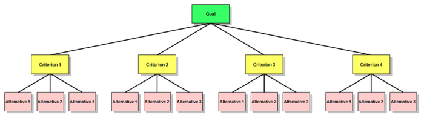

Analytic Hierarchy Process (AHP) adalah teknik untuk mendukung proses pengambilan keputusan yang
bertujuan
untuk menentukan pilihan terbaik dari beberapa alternatif yang dapat diambil. AHP dikembangkan oleh
Thomas
L.Saaty pada tahun 1970-an, dan telah mengalami banyak perbaikan dan pengembangan hingga saat ini.
Kelebihan
AHP adalah dapat memberikan kerangka yang komprehensif dan rasional dalam menstrukturkan permasalahan
pengambilan keputusan. AHP merupakan salah satu metode untuk menyelesaikan masalah Multi Criteria
Decision
Making (MCDM).
Zimmermann (Kusumadewi dkk, 2006:69) mengemukakan bahwa MCMM adalah suatu metode pengambilan keutusan
untuk
menetapkan alternatif terbaik dari sejumlah alternatif berdasarkan beberapa kriteria tertentu. Kriteria
biasanya berupa ukuran-ukuran, aturan-aturan atau standar yang digunakan dalam pengambilan keputusan.
Kenapa AHP ? AHP menguraikan masalah multi faktor atau multi kriteria yang kompleks menjadi suatu
hirarki.
Menurut Saaty (1993), hirarki didefinisikan sebagai suatu representasi dari sebuah permasalahan yang
kompleks dalam suatu struktur multi level dimana level pertama adalah tujuan, yang diikuti level faktor,
kriteria, sub kriteria, dan seterusnya ke bawah hingga level terakhir dari alternatif. Dengan hirarki,
suatu
masalah yang kompleks dapat diuraikan ke dalam kelompok-kelompoknya yang kemudian diatur menjadi suatu
bentuk hirarki sehingga permasalahan akan tampak lebih terstruktur dan sistematis.

HOME PAGE
2019